<!DOCTYPE html><html lang="zh-CN"><head><meta http-equiv="content-type" content="text/html; charset=utf-8"><meta content="width=device-width, initial-scale=1.0, maximum-scale=1.0, user-scalable=0" name="viewport"><meta content="yes" name="apple-mobile-web-app-capable"><meta content="black-translucent" name="apple-mobile-web-app-status-bar-style"><meta content="telephone=no" name="format-detection"><meta name="description" content="字符部落博客，用于记录平时见闻和感受.科技，生活;"><title>主流单反品牌简明介绍（2017） | Yaowen·Xu</title><link rel="stylesheet" type="text/css" href="/css/style.css?v=1.0.0"><link rel="stylesheet" type="text/css" href="//cdn.bootcss.com/normalize/7.0.0/normalize.min.css"><link rel="stylesheet" type="text/css" href="//cdn.bootcss.com/pure/1.0.0/pure-min.css"><link rel="stylesheet" type="text/css" href="//cdn.bootcss.com/pure/1.0.0/grids-responsive-min.css"><link rel="stylesheet" href="//cdn.bootcss.com/font-awesome/4.7.0/css/font-awesome.min.css"><script type="text/javascript" src="//cdn.bootcss.com/jquery/3.2.1/jquery.min.js"></script><link rel="Shortcut Icon" type="image/x-icon" href="/favicon.ico"><link rel="apple-touch-icon" href="/apple-touch-icon.png"><link rel="apple-touch-icon-precomposed" href="/apple-touch-icon.png"><link rel="alternate" type="application/atom+xml" href="/atom.xml"><script>(function(i,s,o,g,r,a,m){i['GoogleAnalyticsObject']=r;i[r]=i[r]||function(){
(i[r].q=i[r].q||[]).push(arguments)},i[r].l=1*new Date();a=s.createElement(o),
m=s.getElementsByTagName(o)[0];a.async=1;a.src=g;m.parentNode.insertBefore(a,m)
})(window,document,'script','https://www.google-analytics.com/analytics.js','ga');
ga('create','UA-108502187-1','auto');ga('send','pageview');</script></head><body><div class="body_container"><div id="header"><div class="site-name"><h1 class="hidden">主流单反品牌简明介绍（2017）</h1><a id="logo" href="/.">Yaowen·Xu</a><p class="description">A student in China, Major in Computer Science ( 主博客：https://www.cnblogs.com/xuyaowen )</p></div><div id="nav-menu"><a href="/." class="current"><i class="fa fa-home"> 首页</i></a><a href="/archives/"><i class="fa fa-archive"> 归档</i></a><a href="/timeline/"><i class="fa fa-calendar"> 时间轴</i></a><a href="/about/"><i class="fa fa-user"> 关于</i></a></div></div><div id="layout" class="pure-g"><div class="pure-u-1 pure-u-md-3-4"><div class="content_container"><div class="post"><h1 class="post-title">主流单反品牌简明介绍（2017）</h1><div class="post-meta">Nov 6, 2017<span> | </span><span class="category"><a href="/categories/单反/">单反</a></span><script src="https://dn-lbstatics.qbox.me/busuanzi/2.3/busuanzi.pure.mini.js" async></script><span id="busuanzi_container_page_pv"> | <span id="busuanzi_value_page_pv"></span><span> 阅读</span></span></div><a href="/2017/11/06/【求知】大话单反品牌/#SOHUCS" class="ds-thread-count"><span id="changyan_count_unit" style="font-size: 15px; color: #6E7173;">0</span><span> 条评论</span></a><script src="https://assets.changyan.sohu.com/upload/plugins/plugins.count.js" async></script><div class="post-content"><h2 id="0x00-前言"><a href="#0x00-前言" class="headerlink" title="0x00 前言"></a>0x00 前言</h2><p>调研单反品牌。SLR camera 为 Single Lens Reflex Camera 缩写，它是指用单镜头，并且光线通过此镜头照射到反光镜上，通过反光取景的相机。</p>
<h2 id="0x01-初探"><a href="#0x01-初探" class="headerlink" title="0x01 初探"></a>0x01 初探</h2><p>首先我在狗东、某宝等电商平台上进行检索「单反」关键词。进行统计得：目前市面上大致有:佳能（Canon)、尼康（Nikon)、宾得(Pentax)、索尼(Sony)、徕卡(Leica)、松下(Panasonic)、通用电气(GE)、卡西欧(Casio)、哈苏(Hasselblad)、富士(Fujifilm)、奥林巴斯(Olympus)、飞思(Phase One)、适马(Sigma)、宝达(Protax)、三星(Samsung)、理光(理光)、柯达(Kodak)、明基(BenQ)、爱国者(aigo)、锡恩帝(CENDE)等大约20个品牌。</p>
<h2 id="0x02-亮相"><a href="#0x02-亮相" class="headerlink" title="0x02 亮相"></a>0x02 亮相</h2><p>下面通过品牌来展示每个厂家的商标。<br><br>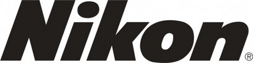<br>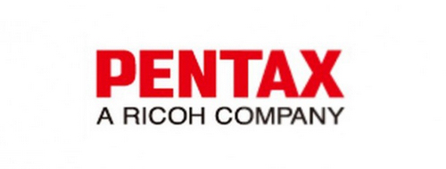<br>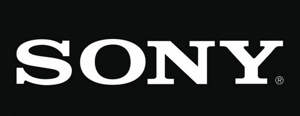<br>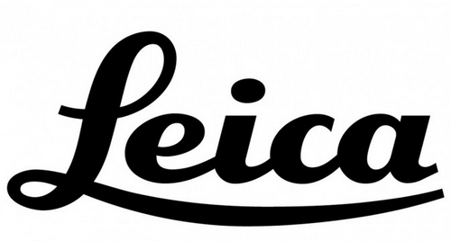<br>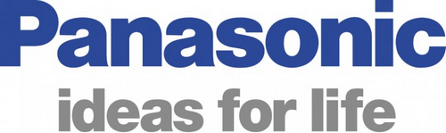<br><br><br>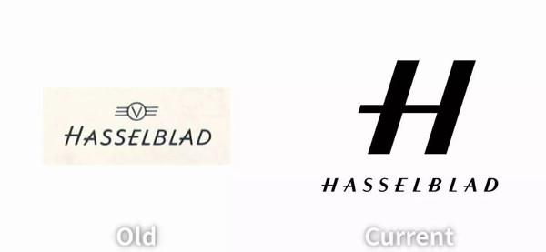<br>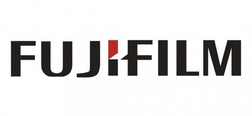<br>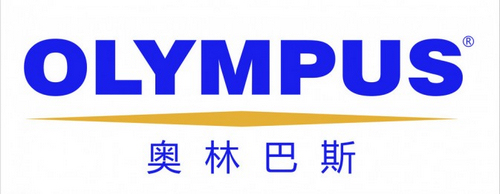<br><br>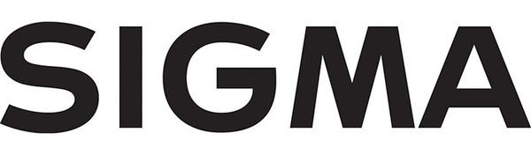<br>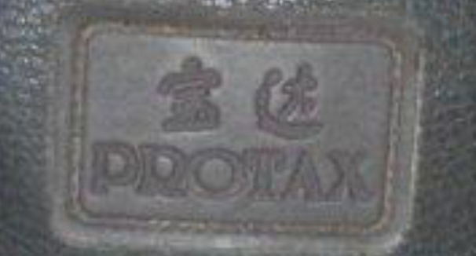<br>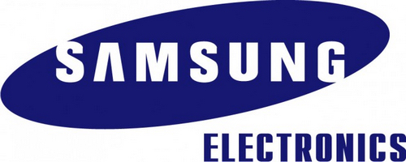<br>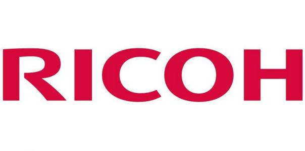<br>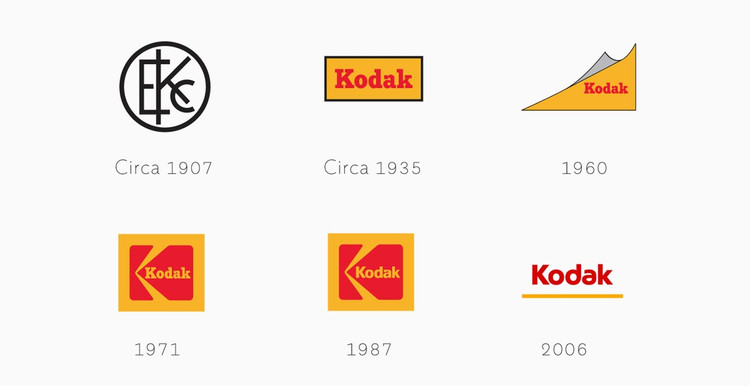<br>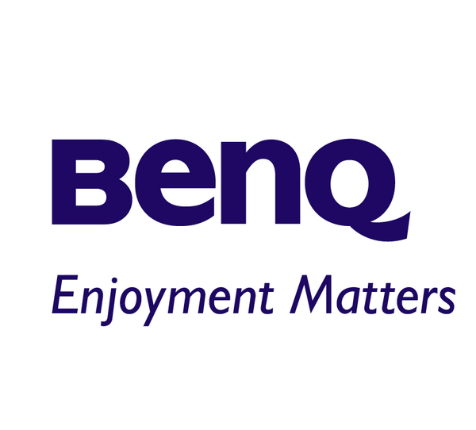<br><br>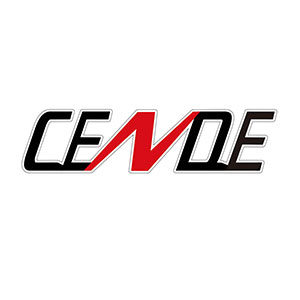</p>
<h2 id="0x03-简评"><a href="#0x03-简评" class="headerlink" title="0x03 简评"></a>0x03 简评</h2><p>可见，在国内市场上见到的众多单反品牌日本品牌居多。据统计日本品牌占有市场88.0%  韩国品牌占有4.6%  国产品牌占有3.6% 欧洲品牌占有3.0% 美国品牌占有0.4% 其他0.4%</p>
<p>简单分析日本品牌占有率居高，大体原因有四：</p>
<p>一、日系相机功能全面；</p>
<p>二、日系相机较易驾驭；</p>
<p>三、日系相机价格适中；</p>
<p>四、日系相机品牌颇多；</p>
<p>市场占有率<a href="http://www.ccsph.com/detail_4139.html" target="_blank" rel="external">数据源</a>：</p>
<p>佳能31.7%<br>尼康23.7%<br>索尼15.3%<br>富士4.9%<br>三星4.6%<br>卡西欧3.6%<br>宾得理光3.4%（宾得3.0% 理光0.4%）<br>松下2.8%<br>奥林巴斯2.4%<br>徕卡2.2%（其实真的卖不出去几只，不过买一只顶10只）<br>哈苏0.5%（与徕卡同理）<br>其他4.9%  </p>
<hr>
<p>最后，看了这么多，琳琅满目的品牌，看到自己的腰包，不仅咽了咽口水。在我看来，无论你拥有什么样的单反，你都走进了摄影爱好者或职业摄影师的行列。接下来我们需要做的就是打开相机去发现美。去感受，去进步。</p>
</div><iframe src="/donate/?AliPayQR=/img/AliPayQR.jpg&amp;WeChatQR=/img/WeChatQR.png&amp;GitHub=https://github.com/yaowenxu&amp;BTCQR=null&amp;BTCKEY=null&amp;PayPal=null" style="overflow-x:hidden;overflow-y:hidden; border:0xp none #fff; min-height:240px; width:100%;" frameborder="0" scrolling="no"></iframe><script type="text/javascript" src="/js/share.js?v=1.0.0" async></script><a data-url="https://yaowenxu.github.io/2017/11/06/【求知】大话单反品牌/" data-id="ckmi1a69n000308q4po3axkhj" data-qrcode="" class="article-share-link">分享</a><div class="tags"><a href="/tags/SLR/">SLR</a><a href="/tags/单反/">单反</a></div><div class="post-nav"><a href="/2017/11/06/Markdown-你手边的小工具/" class="next">简明 Markdown 教程</a></div><div id="SOHUCS" sid="1509968876000"></div><script>(function(){var appid='cythlUzIP';var conf='prod_42f80e7e7e851fb415427e0433ac35e4';var width=window.innerWidth||document.documentElement.clientWidth;if(width<960){window.document.write('<script id="changyan_mobile_js" charset="utf-8" type="text/javascript" src="https://changyan.sohu.com/upload/mobile/wap-js/changyan_mobile.js?client_id='+appid+'&conf='+conf+'"><\/script>')}else{var loadJs=function(d,a){var c=document.getElementsByTagName("head")[0]||document.head||document.documentElement;var b=document.createElement("script");b.setAttribute("type","text/javascript");b.setAttribute("charset","UTF-8");b.setAttribute("src",d);if(typeof a==="function"){if(window.attachEvent){b.onreadystatechange=function(){var e=b.readyState;if(e==="loaded"||e==="complete"){b.onreadystatechange=null;a()}}}else{b.onload=a}}c.appendChild(b)};loadJs("https://changyan.sohu.com/upload/changyan.js",function(){window.changyan.api.config({appid:appid,conf:conf})})}})()
</script></div></div></div><div class="pure-u-1 pure-u-md-1-4"><div id="sidebar"><div class="widget"><form action="//www.google.com/search" method="get" accept-charset="utf-8" target="_blank" class="search-form"><input type="text" name="q" maxlength="20" placeholder="Search"/><input type="hidden" name="sitesearch" value="https://yaowenxu.github.io"/></form></div><div class="widget"><div class="widget-title"><i class="fa fa-folder-o"> 分类</i></div><ul class="category-list"><li class="category-list-item"><a class="category-list-link" href="/categories/单反/">单反</a><span class="category-list-count">1</span></li><li class="category-list-item"><a class="category-list-link" href="/categories/博客/">博客</a><span class="category-list-count">1</span></li><li class="category-list-item"><a class="category-list-link" href="/categories/小工具/">小工具</a><span class="category-list-count">1</span></li></ul></div><div class="widget"><div class="widget-title"><i class="fa fa-star-o"> 标签</i></div><div class="tagcloud"><a href="/tags/博客/" style="font-size: 15px;">博客</a> <a href="/tags/公告/" style="font-size: 15px;">公告</a> <a href="/tags/SLR/" style="font-size: 15px;">SLR</a> <a href="/tags/单反/" style="font-size: 15px;">单反</a> <a href="/tags/Markdown/" style="font-size: 15px;">Markdown</a> <a href="/tags/教程/" style="font-size: 15px;">教程</a></div></div><div class="widget"><div class="widget-title"><i class="fa fa-file-o"> 最近文章</i></div><ul class="post-list"><li class="post-list-item"><a class="post-list-link" href="/2017/11/06/【求知】大话单反品牌/">主流单反品牌简明介绍（2017）</a></li><li class="post-list-item"><a class="post-list-link" href="/2017/11/06/Markdown-你手边的小工具/">简明 Markdown 教程</a></li><li class="post-list-item"><a class="post-list-link" href="/2017/10/23/Hexo-建造博客/">欢迎（Welcome）</a></li></ul></div><div class="widget"><div class="widget-title"><i class="fa fa-external-link"> 友情链接</i></div><ul></ul><a href="http://www.cnblogs.com/xuyaowen" title="博客园站点" target="_blank">博客园站点</a><ul></ul><a href="https://github.com/yaowenxu" title="GitHub" target="_blank">GitHub</a><ul></ul><a href="http://www.neu.edu.cn" title="东北大学 NEU（本科学校）" target="_blank">东北大学 NEU（本科学校）</a><ul></ul><a href="https://github.com/yaowenxu" title="北京航空航大学 BUAA（研究生）" target="_blank">北京航空航大学 BUAA（研究生）</a><ul></ul><a href="/atom.xml" title="订阅博客" target="_blank">订阅博客</a></div></div></div><div class="pure-u-1 pure-u-md-3-4"><div id="footer">Copyright © 2021 <a href="/." rel="nofollow">Yaowen·Xu.</a> Powered by <a rel="nofollow" target="_blank" href="https://hexo.io"> Hexo.</a><a rel="nofollow" target="_blank" href="https://github.com/tufu9441/maupassant-hexo"> Theme</a> by<a rel="nofollow" target="_blank" href="https://github.com/pagecho"> Cho.</a><br/>
<a rel="nofollow" href="http://www.miitbeian.gov.cn/" target="_blank">辽ICP备16005148号</a>
| 
<a rel="nofollow" target="_blank" href="/wechat.html">

 字符部落
</a></div></div></div><a id="rocket" href="#top" class="show"></a><script type="text/javascript" src="/js/totop.js?v=1.0.0" async></script><script type="text/javascript" src="//cdn.bootcss.com/fancybox/3.1.20/jquery.fancybox.min.js" async></script><script type="text/javascript" src="/js/fancybox.js?v=1.0.0" async></script><link rel="stylesheet" type="text/css" href="//cdn.bootcss.com/fancybox/3.1.20/jquery.fancybox.min.css"><script>var _hmt = _hmt || [];
(function() {
  var hm = document.createElement("script");
  hm.src = "//hm.baidu.com/hm.js?9da06f1083c4f7153249c7c896865907";
  var s = document.getElementsByTagName("script")[0];
  s.parentNode.insertBefore(hm, s);
  })();
</script><script type="text/javascript" src="/js/codeblock-resizer.js?v=1.0.0"></script><script type="text/javascript" src="/js/smartresize.js?v=1.0.0"></script></div></body></html>